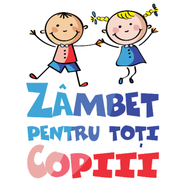

/ Proiecte WeCare / Zambet pentru toti Copiii
/ Proiecte WeCare / Zambet pentru toti Copiii

"Va multumesc ca oferiti parintilor care trec prin perioade financiare dificile, sansa de a cere demn, facilitati pentru o vacanta copiilor lor" - D.N.
Mai multe impresii »
Zambet pentru toti Copiii este primul proiect WeCare al Asociatiei Tabere Cu Suflet. A fost lansat in 2010, in plina Criza economica. Multi parinti si-au pierdut locul de munca in aceea perioada si prin acest proiect le ofeream acces gratuit la programele noastre.
In 2011 am ajutat primii 2 copii, iar astazi am ajuns la peste 200 de si speram ca numarul sa creasca:)
Incepand din 2013 proiectul a fost extins la copiii defavorizati, iar din 2015 la copii cu diferite forme de handicap. Au urmat 4 ani de boom, in care numarul copiilor care au beneficiat de acest program a crescut mult, apoi a venit criza sanitara din 2020 care a redus mult resursele.
Beneficiari »
Ce oferim?
Toate programele Tabere cu Suflet sunt disponibile pentru acest proiect: Tabere, Competitii si Weekend Activ.
Numarul de locuri oferit la un anumit program depinde de numarul de participanti si de locurile disponibile.
Rezervarea se poate face doar in masura in care raman locuri neocupate.
Ne dorim o integrare cat mai buna a copiilor, de aceea ne propunem sa luam, prin acest program, un singur copil in fiecare tabara. Pentru a asigura continuitatea programului, in unele cazuri, poate exista o contributie de 50% din partea solicitantului.
Regulament »
Este foarte simplu! Pentru a beneficia de resursele alocate nu trebuie decat sa completati formularul Zambet pentru toti copiii. Fiecare inscriere va fi analizata de un grup format din reprezentantii Asociatiei, educatori si parinti, iar persoanele calificate vor fi notificate.
Va rugam sa tineti cont ca programul nu are sponsori, fiind sustinut din activitatile desfasurate de Asociatie. Apreciem daca apelati la proiectul Zambet pentru toti Copiii numai in cazul in care aveti cu adevarat nevoie. In caz contrar, veti lua sansa unui alt copil care, poate, are mai multa nevoie.
Atentie: Inscrierea trebuie facuta cu cel putin 90 de zile inainte de inceperea taberei!
Formular inscriere»
Ne dorim sa apreciem impactul programului asupra participantilor, pentru a vedea daca suntem pe calea cea buna:) De aceea, la incheierea programului va rugam sa raspundeti la cateva intrebari!
Formular feedback »
Cine ne sponsorizeaza?
In afara persoanelor care doneaza sume de bani sau se implica voluntar, nu suntem sponsorizati de nimeni.
Lista Donori »
Vreti sa contribuiti?
Fondurile necesare derularii acestui program provin exclusiv din fonduri proprii si din activitatile derulate de Asociatie. Cu ajutorul Dvs si al altor persoane care vor sa ajute, speram sa oferim Zambete cat mai multor copii:)
Concret, puteti sa contribuiti prin directionarea a 3,5% din venit, prin donatii in contul Asociatiei Tabere Cu Suflet sau prin Paypal.
Cum puteti ajuta »
Va multumim pentru Zambetele oferite Copiilor:)